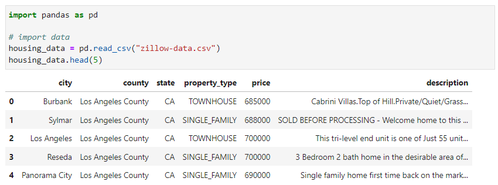
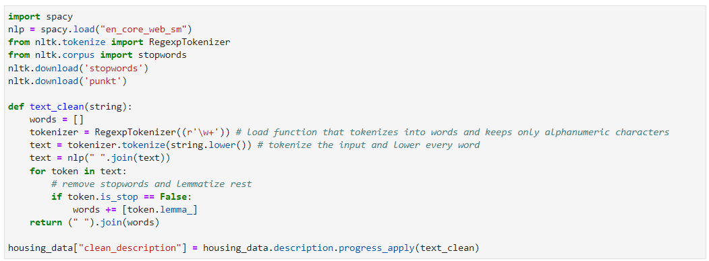
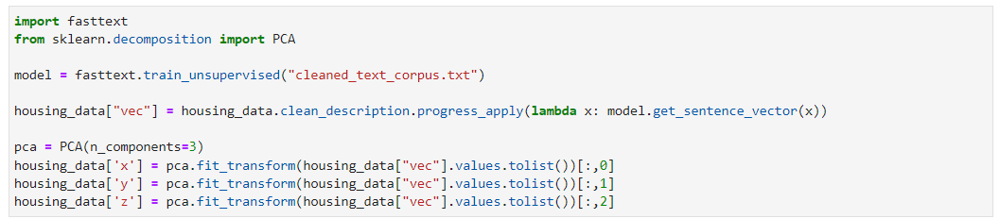
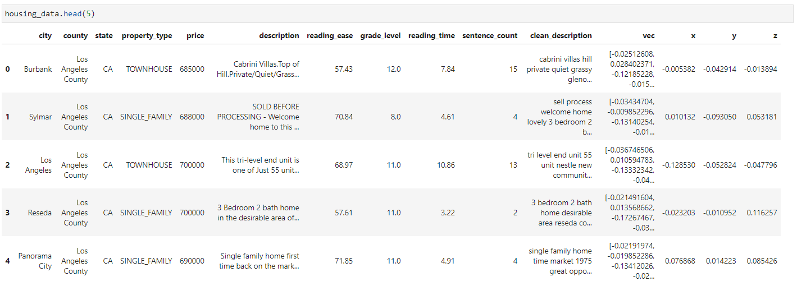

Natural Language Processing
Natural language processing (NLP) refers to the branch of computer science—and more specifically, the branch of artificial intelligence or AI—concerned with giving computers the ability to understand text and spoken words in much the same way human beings can. For each of the following functions, all of the code and datasets can be found here:
Text Statistics
We will be analysing the following data about housing descriptions on Zillow. Note that the data must contain words and preferably sentences.
Based on of this dataset, we can take a few initial text statistics including the following:
- Sentence Count: The number of sentences in the paragraph/description
- Reading Time: The approximate amount of time required to read the paragraph based on length and complexity of sentences
- Grade Level: the minimum grade level required to read the paragraph and fully understand it based on vocabulary and sentence structure.
- Reading Ease: how hard the passage is to read based on length of sentences and number of syllables per word. A score of 100 means your copy is very easy to read. And, a score of 0 means your text is very difficult to read.
Word Vectorization
Converting words to vectors, or word vectorization, is a natural language processing (NLP) process. The process uses language models to map words into vector space. A vector space represents each word by a vector of real numbers. It also allows words with similar meanings have similar representations. The first step in this is to get rid of all of the "stop" word or words that don't have much meaning such as "a", "the", "and", etc. which is represented by the code below:
After removing all of the stop words, we can perform the word vectorization, then reduce it to 3 dimensions using a Principle Component Analysis algorithm. This will make it easier to represent on a graph to see which houses have similar description as compared to a vector with over 10 dimensions.
And with this, this is what the final dataset should look like with new variables all about the description of the home.
